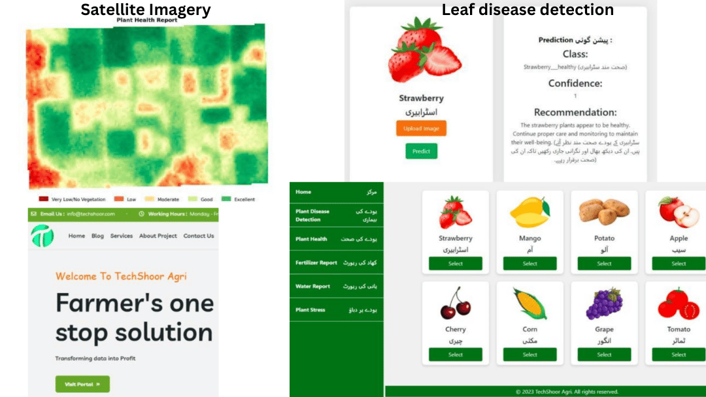

01 — Computer Vision
TechShoor Agri
Satellite imagery turned into field-level yield insights for farmers across South Asia.
- Problem
- Farmers lacked timely, field-level insight into crop health, disease and land condition.
- What I built
- A deep-learning pipeline on multi-spectral satellite imagery with disease detection, severity mapping and per-field recommendations, served by a real-time inference API.
- Outcome
- A live platform that helps raise yield and cut input waste.
Python, TensorFlow, FastAPI, Docker, Azure, Rasterio
Live product →